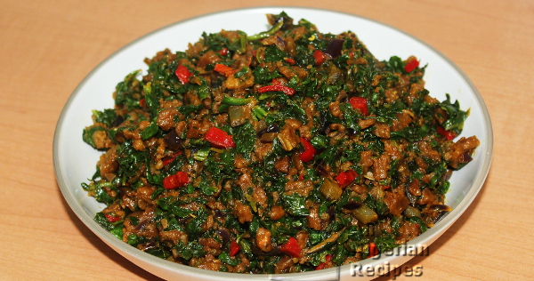

Achicha Ede (Echicha Ede)

What is Achicha
Achicha Ede (Echicha Ede in Enugu State of Nigeria) is a cocoyam pottage prepared with dried cocoyam flakes. It is one of the most traditional meals in Igboland.
Ingredients
- 3 cups achicha ede (cocoyam flakes)
- 600g green leafy vegetables. You can either use Green amaranth, Nigerian pumpkin leaves (ugu) or Spinach
- Scent leaves (nchanwu, efirin)
- ½ cup red palm oil
- ½ cup ukpaka (ugba)
- 2 red onions
- Salt (to taste)
- Crayfish
- Seasoning cubes
Cooking Directions
- The next morning, rinse the achicha and remove from the water.
- Crush into pieces
- Wrap the crushed achicha ede with uma leaves, banana leaves or aluminium foil and cook in a pot with some water for 20 to 30 minutes.
- While that is cooking, rinse and chop the following ingredients: green amaranth or ugu or spinach, scent leaves, onions and peppers.
- When the achicha ede is very soft, remove from the pot and set aside.
- In another clean dry pot, pour the red palm oil and heat it up. When the oil is hot, fry the onions for 3 minutes.
- Add the ukpaka and pepper and fry for another 3 minutes.
- Add the chopped leafy vegetable and stir till it heats up. Please note that when using spinach you need to cook the spinach in a separate pot till the excess water come out, then add only the vegetables so you do not have a pool of water in the meal.
- When the content of the pot heats up, add the cooked achicha, stir vey well and add salt to taste.
- Stir very well and it's done!
Return to top
Return to main page